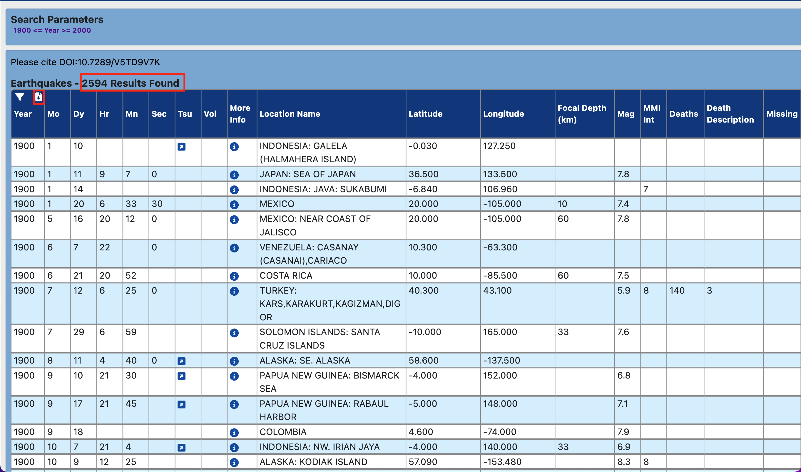
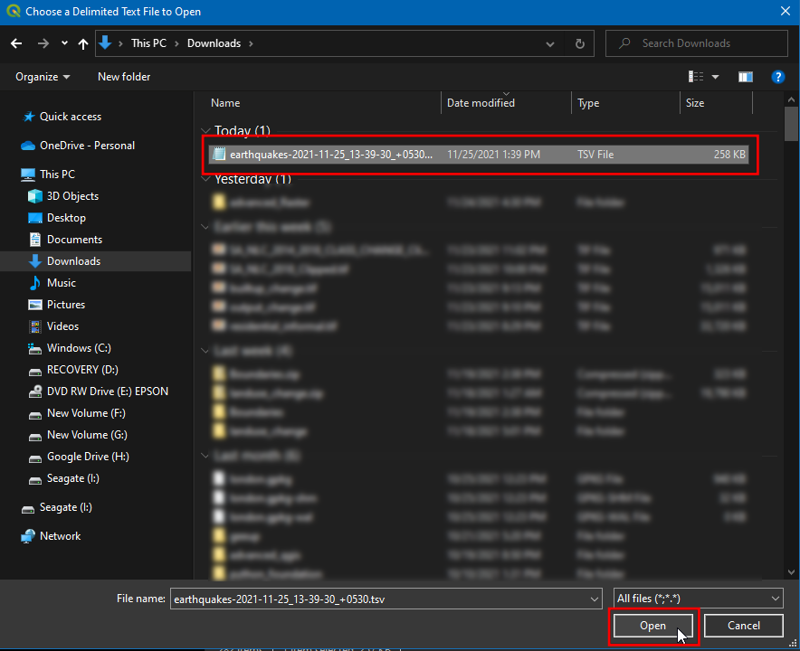

Uvoz podatkov preglednic ali datotek CSV (QGIS3)¶
Velikokrat so podatki GIS na voljo v obliki tabele ali preglednice. QGIS omogoča uvoz strukturiranih besedilnih datotek s koordinatami kot vektorskega sloja. V tem vodniku je prikazano, kako lahko z orodjem Data Source Manager uvozite datoteke Delimited Text.
Pregled naloge¶
V QGIS bomo uvozili besedilno datoteko z lokacijami potresov v obliki vrednosti, ločenih s tabulatorji (TSV), in ustvarili sloj točk.
Pridobivanje podatkov¶
V tem učbeniku bomo prenesli nabor podatkov o potresih med letoma 1900 in 2000 iz Nacionalnega centra za geofizikalne podatke agencije NOAA, ki je pripravil odličen nabor podatkov o vseh pomembnih potresih od leta 2150 pred našim štetjem. obiščite portal NOAA NCEI <https://www.ngdc.noaa.gov/hazel/view/hazards/earthquake/search>`_ in vnesite Min kot
1900in Max kot2000. Tako boste dobili vse potrese, ki so se zgodili in jih je NOAA zabeležil med tema letoma. Za druge specifične rezultate lahko filtrirate z različnimi parametri. Kliknite :guilabel:Search.

As a result, we got 2594 earthquake incidents. Click on the Download TSV icon.

Kopijo zgornjih podatkovnih nizov lahko neposredno prenesete s spodnje povezave:
earthquakes-2023-09-12_17-19-15_+0530.tsv
Vir podatkov [NCEI]
Postopek¶
Preučite vir tabelaričnih podatkov. Prenesena baza podatkov o potresih vsebuje polji
Latitudein ``Longitude`, ki označujeta lokacijo epicentra potresa in druge povezane atribute. Ta polja bomo uporabili za uvoz datoteke kot točkovnega sloja. Podatke odprite v urejevalniku besedila, kot je Notepad/TextMate, da si ogledate vsebino. Opazili boste, da je vsako polje ločeno z znakom TAB.

Opomba
Če imate preglednico, jo s funkcijo Save As v programu shranite kot datoteko Tab Delimited File ali datoteko Comma Separated Values (CSV).
QGIS je opremljen z enotnim upraviteljem podatkov, ki omogoča nalaganje vseh različnih podprtih podatkovnih formatov. Kliknite gumb Open Data Source Manager v orodni vrstici Data Source Toolbar. Uporabite lahko tudi Ctrl + L bližnjico na tipkovnici.

V pogovornem oknu Data Source Manager preklopite na zavihek Delimited Text. Kliknite gumb … poleg File name.

Odvisno od operacijskega sistema si lahko datoteko na prenesenem mestu ogledate ali ne. V Datotečnih formatih preklopite na
Vse datoteke (*; *.*), da si ogledate datoteko tsv.

Zdaj boste videli preneseno datoteko. Izberite jo in kliknite Open.

V pogovornem oknu Data Source Manager bo pot do datoteke na voljo v oknu File Name. Spremenite Layer name (ime plasti) na
1900_2000_earthquakes. V razdelku File format izberite Custom delimiters in potrditeTab. V razdelku Geometry definition izberite Point coordinates. Privzeto bosta vrednosti X polje in Y polje samodejno napolnjeni, če bo v vnosu našel ustrezno polje z imenom. V našem primeru sta toLongitudeinLatitude. Lahko ju spremenite, če uvoz izbere napačna polja. V polju Geometry CRS lahko pustite privzeto vrednostEPSG:4326 - WGS 84CRS. Če vaša datoteka vsebuje koordinate v drugem CRS, lahko tukaj izberete ustrezen CRS. Kliknite Add.
Opomba
Koordinate X in Y zlahka zamenjamo. Zemljepisna širina določa položaj točke v smeri sever-jug in je zato Y koordinata. Dolžina določa položaj točke v smeri vzhod-zahod in je X koordinata.
Zdaj boste videli, da bodo podatki uvoženi in prikazani na platnu QGIS kot nova plast z imenom
1900_2000_potresiin CRSEPSG:4326.